Справочник по Git и GitHub · модуль 4 · GitHub
Глава 4.8
Проверка изменений
на GitHub
В главе разобраны история ветки, сведения о коммите и построчная разница файлов на GitHub. Сравнение двух веток покажет, как выбранные стороны и общий предок влияют на результат.
- Категория
- GitHub
- Что уже знакомо
- Коммит, граф истории, ветка и merge
- Что получится
- Прочитать diff, выбрать стороны сравнения и передать точную ссылку
- Сколько занимает
- Около сорока минут; достаточно браузера
Суть за две минуты
За пару: найдите изменение, объясните его по строкам и сохраните ссылку, которая не будет зависеть от движения ветки.
§1Какие примеры будем читать
Изменение приветствия можно проверить по ссылке на коммит. Для этого нужны его идентификатор, изменённые строки и исходное состояние для сравнения.
Основной пример — публичный репозиторий octocat/Hello-World. В нём достаточно двух коротких файлов. Ветка octocat-patch-1 меняет Hello World! на Hello world! в README. Ветка test добавляет CONTRIBUTING.md с одной строкой. Эти изменения уже существовали; для главы в чужом репозитории ничего не создавалось.
HTML-разметку с контекстом посмотрим в отдельном публичном проекте sait-vizitka. А случай «файлы совпадают, история различается» — на одноразовом локальном стенде. У каждого примера свои хеши и числа; локальный стенд не опубликован на GitHub и не выдаётся за его интерфейс.
Примеры разделены по тому, что в них проверяется:
| Пример | Что проверяем |
|---|---|
| GitHub · Hello-World | История, README, CONTRIBUTING.md и направления сравнения |
| GitHub · sait-vizitka | Контекст HTML и номера строк |
| Локальный Git-стенд | Одинаковые деревья при разных коммитах; переименование |
Кадры показывают страницы публичных репозиториев. Локальные результаты подписаны отдельно; начнём с истории Hello-World.
Кадры сняты 18 ноября 2026 года без входа в аккаунт. Нажмите кадр, чтобы увеличить; Esc закрывает увеличение. Ссылки с именами веток показывают их текущее состояние, ссылки с полными хешами фиксируют выбранные коммиты.
§2Выбрать ветку и открыть историю
Зачем этот шаг. Правка могла попасть не в ту ветку, которая открывается по умолчанию. Историю нужно читать для выбранной ветки.
Откройте историю octocat-patch-1. На странице Commits селектор под заголовком показывает octocat-patch-1. Если выбрана другая ветка, раскройте селектор и выберите эту. Здесь нет необходимости переключать локальный репозиторий.
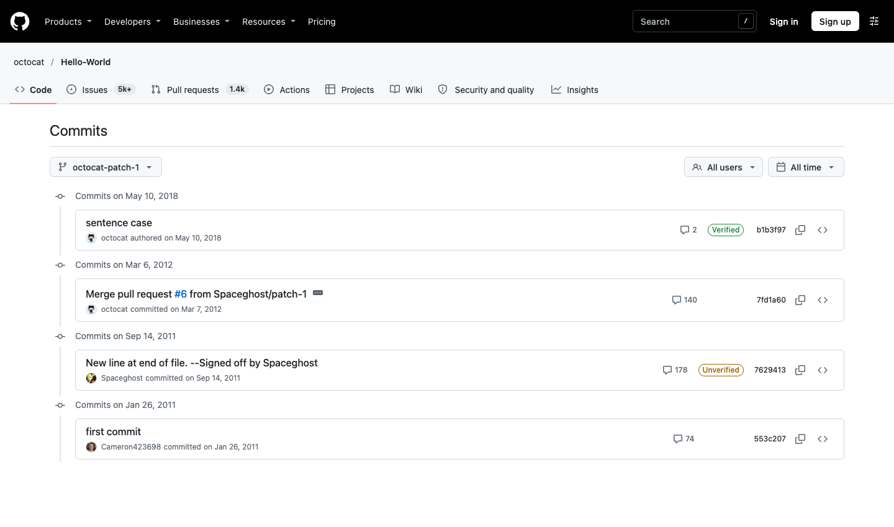
Название sentence case ведёт на страницу коммита. Короткий идентификатор справа помогает отличить его от другого коммита с таким же сообщением. Аватар и имя связывают запись с аккаунтом, если GitHub установил эту связь. Коммиты сгруппированы по датам. Линии родительства в этом списке не нарисованы.
История ветки включает и более ранние коммиты, достижимые через родителей. Она не ограничивается коммитами, созданными «под именем» этой ветки: сам объект коммита не хранит название ветки.
Что получилось.Найдена запись b1b3f97 в нужной ветке. Откроем её и проверим содержание.
§3Прочитать сведения о коммите
Зачем этот шаг. Сообщение описывает намерение автора. Идентификатор, родитель и diff позволяют проверить, что сохранено.
Откройте коммит b1b3f97. Вверху видны сообщение sentence case, аккаунт octocat, дата и подпись authored. Ниже находятся 1 parent, ссылка 7fd1a60 на родителя и идентификатор самого коммита.
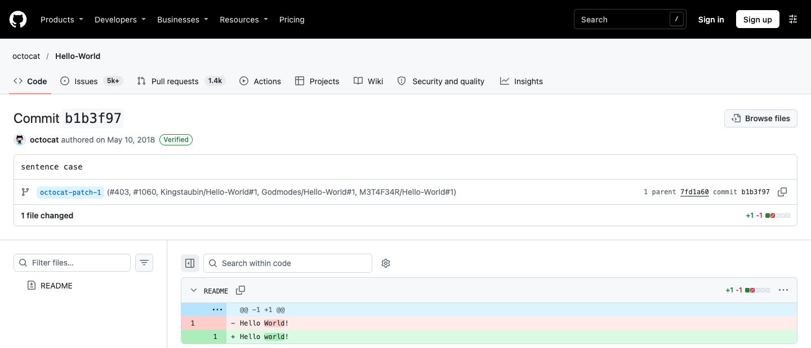
Автор — тот, кто первоначально подготовил изменение; коммитер — тот, кто записал этот объект коммита. Эти сведения могут различаться. В b1b3f97 автор записан как The Octocat, коммитер — GitHub: это проверено по данным самого коммита. В показанной шапке есть только octocat authored. Отдельное имя коммитера здесь не выведено.
Где посмотреть раздельное авторство
На некоторых страницах GitHub явно пишет «authored and … committed». Например, в сравнении тегов git/git, у записи 580097b стоят peff authored и dscho committed. Это другой репозиторий и другой коммит, не b1b3f97.
Точные поля b1b3f97 доступны для чтения через GitHub API: author.name — The Octocat, committer.name — GitHub. По ссылке API открываются структурированные данные коммита. Для чтения строк diff эти поля открывать необязательно.
У автора и коммитера бывают разные даты. Здесь обе соответствуют 2018-05-10T17:55:19Z. В шапке показано 10 мая 2018 года; часовой пояс отображения может отличаться. Последовательность родительства задают ссылки на родителей. По датам и именам её определить нельзя.
Родитель — предыдущий коммит, на который ссылается текущий. У b1b3f97 он один: 7fd1a60. У merge-коммита родителей может быть несколько, у самого первого — ни одного. Поэтому число родителей проверяют на странице коммита. Соседство записей в списке этого числа не показывает.
Свяжем знакомый объект коммита с тем, что только что прочитали на странице. Схема использует реальные идентификаторы основного примера; стрелка означает движение от предыдущего состояния к следующему.
Изменённый файл: README. Сводка: +1 −1. Полный снимок файлов принадлежит коммиту; diff получен сравнением с родителем.
По-простому: запись и лист правок
У двух подписанных редакций документа можно составить лист правок. Новая редакция хранится целиком, а лист правок составляют, сравнив её с предыдущей.
Что есть что: редакция — дерево файлов коммита; подпись — сведения о коммите; лист правок — diff. Аналогия не означает, что Git хранит каждый файл отдельной полной копией на диске.
На схеме обе версии README связаны через родителя. Теперь прочитаем саму разницу строк.
§4Разобрать diff и переключить его вид
Зачем этот шаг. По размеру правки нельзя понять её смысл. Нужно прочитать старую и новую строки в нужном файле.
Diff — показ различий между двумя состояниями. На странице b1b3f97 открыт файл README. Строка со знаком − содержит старое Hello World!, со знаком + — новое Hello world!. Изменился регистр буквы W; файл не был удалён и создан заново.
В режиме Unified старая и новая строки идут одна под другой. У удалённой строки указан старый номер 1, у добавленной — новый номер 1. Две колонки номеров относятся к разным версиям файла. Удалённые и добавленные строки различаются по цвету и знакам − и +.
Для более длинного фрагмента нужен контекст: неизменённые строки рядом с правкой. Перейдём к отдельному HTML-примеру — коммиту 8da3e92 проекта sait-vizitka.
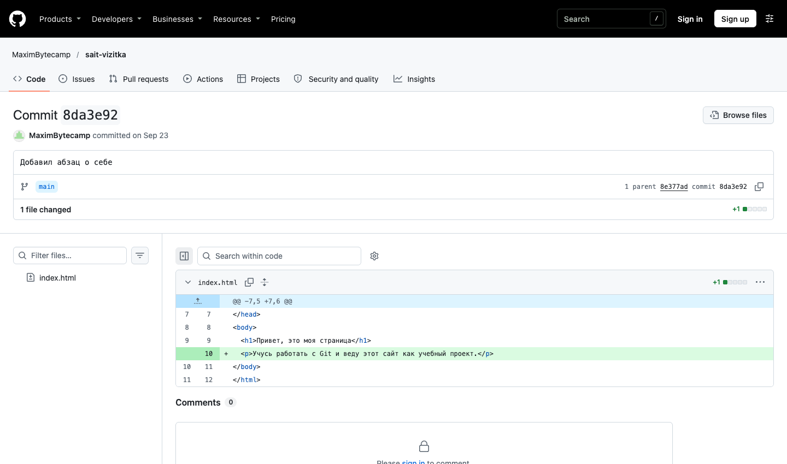
Перед добавлением видны <body> и заголовок страницы; после него — закрывающие теги. Эти строки не помечены + или −: это контекст. Новый абзац занял строку 10. Старый </body> со строки 10 оказался на новой строке 11: номер изменился, но сам тег не менялся.
Что означает строка @@ −7,5 +7,6 @@
Это заголовок показанного фрагмента: в старом файле он начинается со строки 7 и занимает 5 строк, в новом — со строки 7 и занимает 6. В эти числа входит контекст. Количество добавлений указано отдельно: в этом коммите добавлена одна строка.
Теперь вернитесь к b1b3f97. Чтобы читать две версии рядом, откройте настройки отображения diff — кнопку с шестерёнкой над файлами. В снятом интерфейсе меню содержит Layout с вариантами Unified и Split.
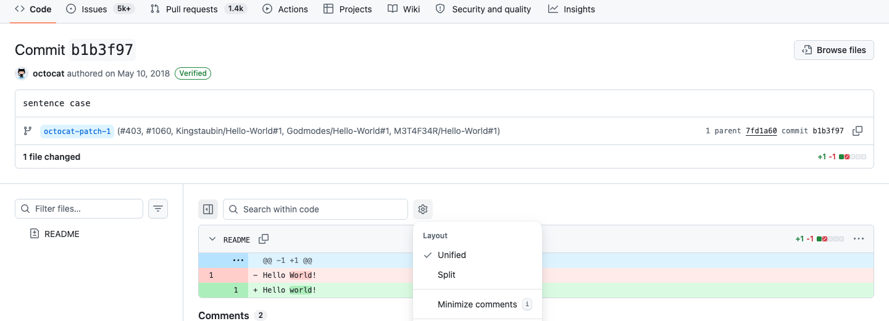
Выберите Split. Слева будет прежняя строка Hello World!, справа — новая Hello world!. Номера строк у каждой половины свои.
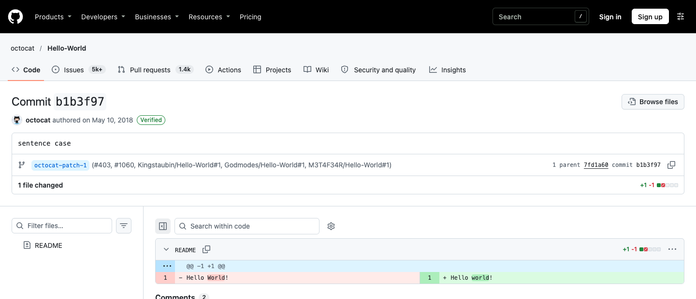
Что получилось.Прочитаны две правки: в README изменили регистр буквы; в отдельном HTML-примере добавили абзац после заголовка.
§5Отличить правку, добавление и удаление файла
Зачем этот шаг. Перед чтением строк определите, что произошло с самим файлом. Правка содержимого и отсутствие файла — не одно и то же.
На странице коммита слева есть File tree, а над diff — число изменённых файлов и общая сводка добавлений и удалений строк. В b1b3f97 изменён один существующий README. Чтобы увидеть добавление, откройте b3cbd5b из ветки test.
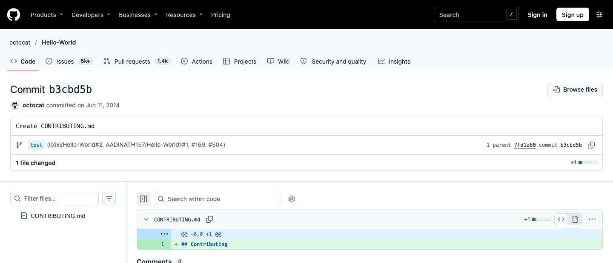
В новом файле есть ## Contributing — заголовок «Как внести вклад». Для чтения правки достаточно увидеть: строка помечена +, старого номера у неё нет. Содержимое README этот коммит не меняет.
Когда diff показан не целиком: удаление, изображения и большие файлы
В прямом сравнении b3cbd5b..b1b3f97 файл CONTRIBUTING.md отсутствует на правой стороне. GitHub показывает This file was deleted и кнопку Load diff. После нажатия можно прочитать удалённую строку.
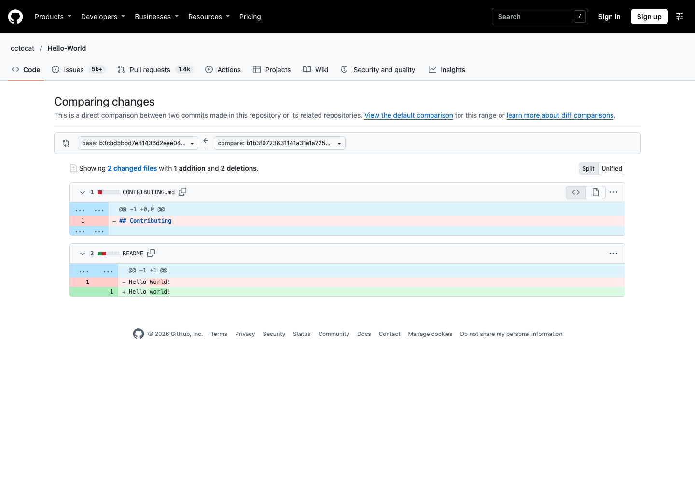
Текстовый diff не универсален. В отдельном коммите 5fc8b7c справочника у PNG-файла показан отдельный блок с размером в KB. Построчной текстовой разницы в нём нет. При этой съёмке область предпросмотра осталась пустой: по ней нельзя проверить содержимое картинки. Содержимое PNG в этом прогоне осталось непроверенным.
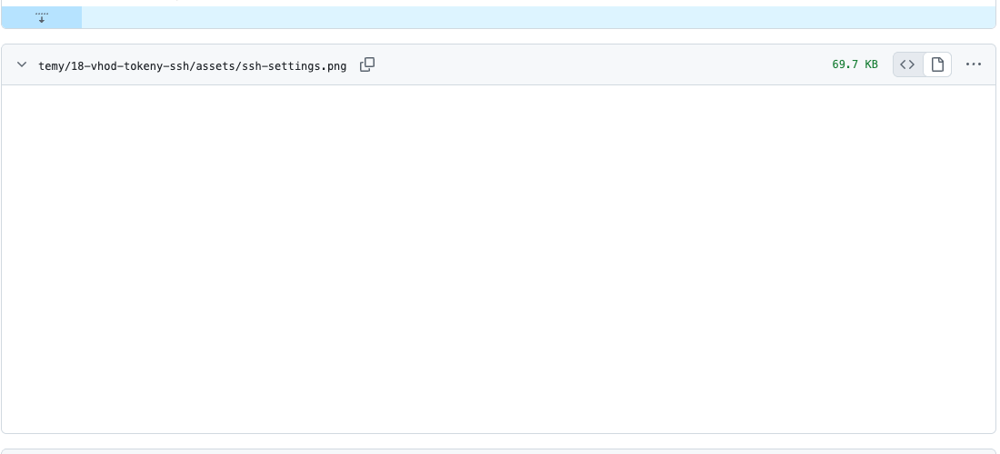
В том же коммите HTML-фрагменты сначала скрыты сообщением Large diffs are not rendered by default и кнопкой Load diff. Видимая страница ещё не означает, что все правки уже развёрнуты. Удалённый файл в предыдущем кадре тоже требовал Load diff, но с другим пояснением.
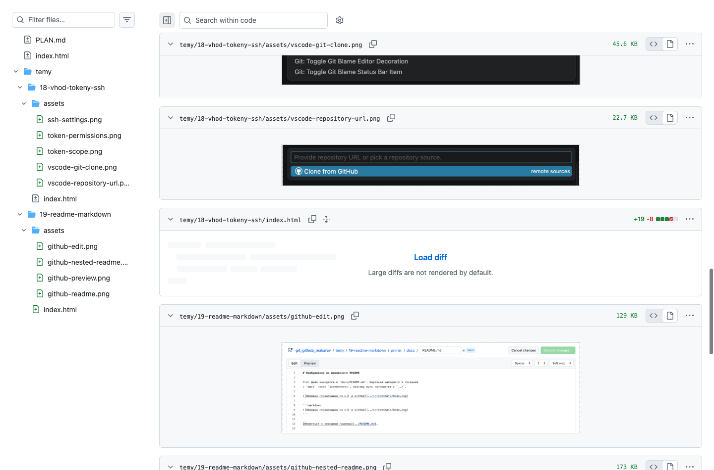
На этих кадрах проверены два случая скрытого diff: удалённый файл и большой HTML-фрагмент. Переход между фрагментами проверяют по номерам строк и заголовкам @@. Удаление подтверждает знак − в diff. Предельные размеры GitHub здесь не измерялись; раскрытие любого большого файла не гарантируется.
Переименование: только локально проверенный случай
В локальном стенде коммит 503a877 переименовал help.html в guide.html без изменения содержимого. Git распознал его как R100; numstat дал 0 добавлений и 0 удалений строк. Следующий коммит 477f920 удалил guide.html: 0 добавлений и 2 удаления. Это результаты локального Git, не кадры GitHub. Отдельного интерфейса переименования на GitHub здесь не демонстрируем.
Git определяет переименование при сравнении по сходству содержимого. Поэтому нулевой счётчик строк сам по себе не означает, что ни один путь файла не изменился.
После проверки отдельных файлов можно перейти к сравнению двух выбранных веток.
§6Выбрать base и compare
Зачем этот шаг. Одна ветка меняет приветствие, другая добавляет файл. Нужно понять, какую сторону мы проверяем и от какой точки считаем изменения.
Откройте сравнение test...octocat-patch-1. Над результатом находятся два селектора: base: test и compare: octocat-patch-1. Для такого сравнения base выбирает базовую сторону, а compare — сторону, чьи изменения после общего предка будут показаны.
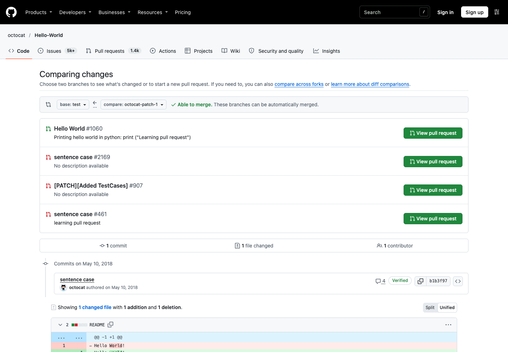
Страница содержит и элементы для командной работы, но сейчас они не нужны: не создавайте pull request. Читаем только выбранные стороны, список коммитов и файлы ниже.
Обе ветки произошли от 7fd1a60. Схема показывает фактический граф примера. Пунктир обозначает выбранную base, двойная толщина рамки — compare; эти подписи работают и без цвета.
Пунктир = base; толстая рамка = compare. Стрелки идут от общего предка к потомкам.
В селекторах можно выбирать не только ветки. Доступно также сравнение тегов и конкретных коммитов. Ветка — подвижное имя; тег обычно обозначает выбранную версию; хеш задаёт конкретный объект коммита. Для воспроизводимого обсуждения используйте полные хеши.
Настоящий пример сравнения тегов
В git/git: v2.45.0...v2.45.1 стороны заданы именами тегов этого репозитория. На кадре видны выбранные версии и список коммитов. Разбирать программный код этого проекта для упражнения не требуется.
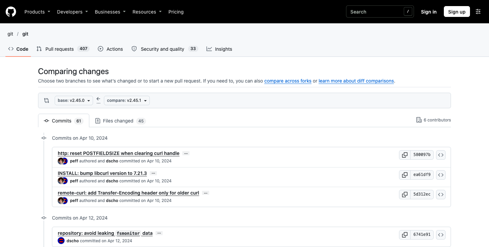
Существование тегов и результат страницы проверены чтением GitHub. Съёмка выполнена без создания тегов и веток. Имя тега тоже не равно полному хешу: при необходимости зафиксируйте коммиты, на которые указывают оба тега.
Выбранные стороны задают точки сравнения. Число точек в адресе определяет, какие состояния попадут в diff.
§7Не перепутать две и три точки
Зачем этот шаг. «Чем отличаются две версии?» и «Что сделала выбранная ветка после расхождения?» могут дать разный список файлов.
Три точки: base...compare. Для наших веток GitHub берёт общий предок и показывает разницу от него до compare. Поэтому test...octocat-patch-1 показывает только замену строки README. Это не прямое вычитание файлов ветки test из файлов ветки octocat-patch-1.
Две точки: base..compare. На GitHub это прямое сравнение конечных состояний. Откройте b3cbd5b..b1b3f97. Здесь стороны закреплены полными хешами тех же двух веток.
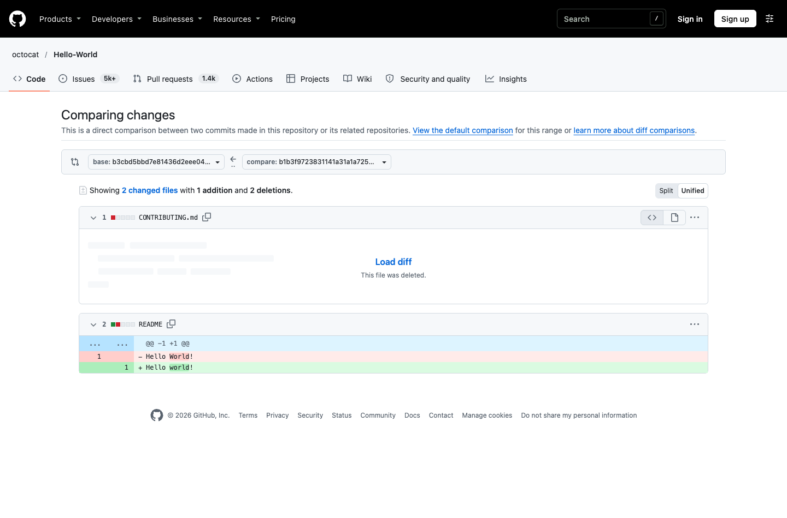
В левом состоянии есть CONTRIBUTING.md, в правом его нет — поэтому здесь он показан удалённым. README различается одной строкой — поэтому там +1 −1. Получается суммарно +1 −2. Результат описывает переход между выбранными состояниями. Историческую правку b1b3f97 проверяют относительно его родителя.
Теперь поменяем стороны трёхточечного сравнения: octocat-patch-1...test. Общий предок остался 7fd1a60, но compare теперь указывает на b3cbd5b.
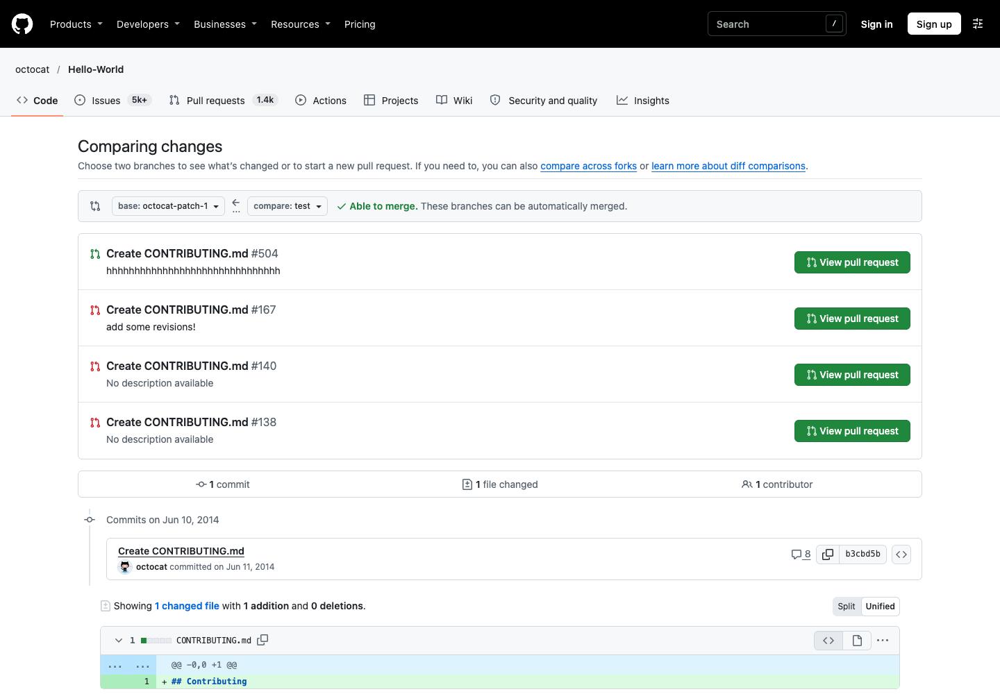
Если поменять стороны прямого сравнения, добавления и удаления обратятся: CONTRIBUTING.md окажется добавленным, а README вернётся от Hello world! к Hello World!. Для трёх точек это не общее правило: выбирается другая сторона относительно общего предка.
Обратное прямое сравнение на GitHub
В b1b3f97..b3cbd5b стороны переставлены. На кадре CONTRIBUTING.md добавлен, а README меняется обратно. Сводка: +2 −1.
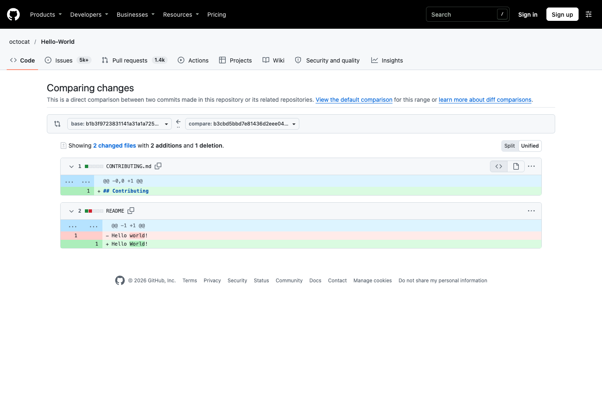
Такой результат относится к разнице конечных деревьев. У трёхточечного сравнения при перестановке сторон меняется compare относительно общего предка.
По-простому: две проверки редакций
Что есть что: готовые редакции — деревья base и compare; общая исходная редакция — merge base. В этом примере общий предок один. Для сложной истории с несколькими общими предками нужна отдельная проверка.
Почему нельзя переносить сюда правило git log A..B
В локальном Git git diff A..B сравнивает деревья A и B, а git diff A...B — общий предок с B. Но git log A..B выбирает множество коммитов: достижимые из B, не достижимые из A. Одинаковые точки в разных командах не означают одинаковую операцию. В этой главе обсуждается diff и фактическое поведение страниц GitHub Compare.
Что получилось.Перед чтением сравнения мы называем обе стороны и вопрос: конечные состояния или правки compare после общего предка.
§8Проверить файлы отдельно от истории
Зачем этот шаг. Сообщение «файлы одинаковые» не отвечает на вопрос «одинаковые ли коммиты и их предки».
Дальше — только локальный одноразовый стенд, без кадров GitHub. В исходном коммите cb21ff4 файл index.html содержал ссылку Root на /root. Коммит 7f42542 заменил её на Welcome и /welcome. Другая ветка от исходного коммита добавила help.html. Код стенда нужен только для чтения, запускать сайт не требуется.
Ниже показана строка index.html, которая изменилась. Строка <!doctype html> перед ней осталась прежней. Статистика — одна удалённая и одна добавленная строка; внутри строки изменились и текст ссылки, и её адрес.
| 2 | − | <html lang="en"><body><a href="/root">Root</a></body></html> |
| 2 | + | <html lang="en"><body><a href="/welcome">Welcome</a></body></html> |
После 7f42542 создан отдельный коммит 7d898dc без изменения файлов. Сравнение этих двух состояний пустое. Чтобы не принять его за доказательство одинаковой истории, отдельно проверим дерево файлов и граф.
Одинаковое дерево main и same:7e18b2ea1c047ccad9fa920f04e73db9460dd65b
Равенство деревьев здесь проверено по полным идентификаторам, а различие истории — по идентификаторам коммитов и их родителям. Пустого diff для второго вывода недостаточно. Вывод о совпадении истории требует отдельной проверки цепочек родителей.
Точные результаты и воспроизведение локального опыта
Проверка выполнена Git 2.51.1. Сценарий стенда и вывод локальной проверки оставлены для преподавателя; самостоятельная работа не требует терминала. Сценарий создаёт только временные репозитории и читает публичный Hello-World, не выполняя его код.
- main:
7f42542ef01aac2b7b2897e506b79116576dc2df. - same:
7d898dce02a26242b26e74dd027d63fc6d05865e. - У обоих дерево
7e18b2ea1c047ccad9fa920f04e73db9460dd65b. - Прямые сравнения main..same и same..main пустые; граф всё равно содержит дополнительный коммит.
Полные данные отдельно проверенного публичного примера: Git-объекты и diff Hello-World. Git-данные проверены локально, поведение страниц — отдельно в браузере.
§9Сохранить точную ссылку
Зачем этот шаг. Другой человек должен открыть те состояния, которые вы проверили, даже если завтра ветка сдвинется.
Для одного коммита скопируйте адрес его страницы: он содержит /commit/ и полный хеш. На кадре §3 рядом с коротким хешем есть значок копирования идентификатора, но хеш и URL — разные вещи. Для отправки ссылки достаточно адресной строки браузера.
Для сравнения замените имена веток полными хешами и сохраните нужное число точек. Например, постоянное трёхточечное сравнение b3cbd5b...b1b3f97 и прямое b3cbd5b..b1b3f97 ведут к разным результатам.
Проверим адрес с полными хешами на странице GitHub. Между сторонами оставлены три точки.
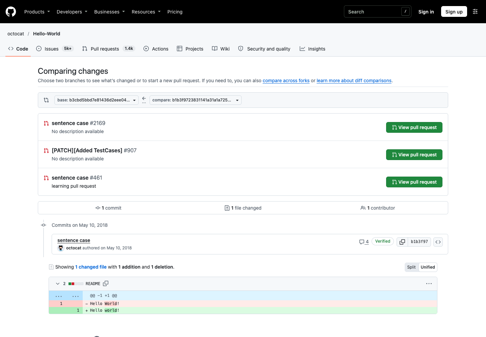
Рядом со ссылкой напишите, что проверяли: «base b3cbd5b, compare b1b3f97, три точки: правка README после общего предка». Эта подпись задаёт направление и смысл сравнения. Ссылка с хешами фиксирует объекты, но не гарантирует вечную доступность: репозиторий могут удалить или закрыть.
§10Частые ошибки
| Ошибка | Почему вывод неверен | Что проверить |
|---|---|---|
| «В истории нет правки» | Открыта другая ветка или включён фильтр | Название ветки, All users и All time на странице Commits |
| «+1 −1 — два смысловых изменения» | Счётчик считает строки; одна замена занимает старую и новую строку | Содержание обеих строк и имя файла |
| «Мало строк — значит, код хороший» | Размер diff не проверяет правильность ссылки, условия или поведения | Что изменилось по смыслу; для поведения нужны отдельные проверки |
| «В b1b3f97 удалили CONTRIBUTING.md» | Так выглядит только переход от b3cbd5b к b1b3f97; у самого b1b3f97 другой родитель | Страницу коммита и обе стороны сравнения |
| «Три точки — то же самое, что две» | У разошедшихся веток общий предок отличается от base | Какие состояния реально сравниваются |
| «Пустой diff — одинаковая история» | Могут совпасть только деревья файлов | Хеши коммитов, деревья и родительство отдельно |
| «Все строки уже видны» | Часть diff может быть ещё не загружена | Load diff и поясняющие сообщения GitHub |
| «Ссылка на ветку фиксирует результат» | Ветка может сдвинуться | Полные хеши, порядок сторон и число точек в URL |
§11Проверьте себя
- Что изменено в b1b3f97: файл целиком или одна строка? Какой родитель?
- Почему в HTML-коммите 8da3e92 у закрывающего тега поменялся номер, хотя сам тег не изменяли?
- Какой файл покажет test...octocat-patch-1? А обратное трёхточечное сравнение?
- Почему прямое b3cbd5b..b1b3f97 показывает удаление CONTRIBUTING.md?
- Что остаётся неизменным при переключении Unified → Split?
- Как доказано, что локальные main и same имеют одинаковые файлы, но разную историю?
Ответы
- В README заменена строка Hello World! на Hello world!. Родитель — 7fd1a60. Сводка +1 −1.
- Перед тегом добавлен абзац. Строки ниже сдвинулись; контекст не превращается в правку только из-за нового номера.
- Прямое направление с тремя точками показывает README, обратное — добавление CONTRIBUTING.md. В обоих случаях исходная точка diff — 7fd1a60.
- У левого состояния файл есть, у правого нет. Это разница деревьев. Сам b1b3f97 меняет только README относительно своего родителя.
- Коммит, сравниваемые состояния, строки и статистика. Меняется расположение старой и новой версий.
- Совпали полные хеши деревьев. Хеши коммитов различаются; у same есть дополнительный коммит с родителем main. Граф проверен отдельно от diff.
§12Самостоятельная работа: только чтение
Используйте публичный Hello-World. Вход в аккаунт и разрешение на запись не нужны. Не редактируйте файлы, не отправляйте изменения и не создавайте pull request.
- Откройте историю
octocat-patch-1, найдитеsentence caseи перейдите на страницу коммита. Запишите полный хеш, сообщение, видимые сведения об авторстве, дату и родителя. Если отдельное имя коммитера не показано, так и отметьте; не приписывайте его шапке. - Назовите файл и объясните старую и новую строки своими словами. Запишите числа добавлений и удалений, не называя их числом смысловых изменений.
- Посмотрите Unified и Split. Укажите старый и новый номера изменённой строки и объясните, почему статистика не изменилась.
- Поставьте base =
test, compare =octocat-patch-1. Объясните, почему в трёхточечном сравнении не показано удаление CONTRIBUTING.md. Затем поменяйте стороны и назовите новый результат. - Откройте прямое сравнение тех же конечных коммитов через две точки. Объясните появление второго файла и, если требуется, нажмите Load diff для чтения удалённой строки.
- Сохраните одну ссылку на коммит и одну на сравнение с полными хешами. Рядом со второй подпишите base, compare, число точек и вопрос, на который отвечает diff.
Результат: короткая записка с двумя ссылками и объяснением правки и направления сравнения. Достаточно текста; создавать коммиты в чужом проекте не требуется.
Как проверить свою записку
Для состояния, снятого в главе: sentence case — b1b3f97, родитель 7fd1a60, README +1 −1. test...octocat-patch-1 показывает README, обратное сравнение — CONTRIBUTING.md +1 −0. Прямое b3cbd5b..b1b3f97 содержит два файла и сводку +1 −2. Если ветки с тех пор сдвинулись, используйте ссылки с полными хешами из главы и укажите это в записке.
§13Шпаргалка
- История: сначала проверьте выбранную ветку и фильтры; затем открывайте сообщение коммита.
- Коммит: сообщение, авторство, дата, полный хеш, родители, изменённые файлы.
- Diff: − означает старую строку, + — новую; контекст помогает понять место правки. У двух версий свои номера строк.
- Unified / Split: одна разница, два способа расположить строки.
- Две точки: конечное дерево base → конечное дерево compare.
- Три точки: общий предок → compare. Перестановка сторон может изменить набор файлов и знаки строк.
- Пустой diff: ещё не доказательство совпадения истории.
- Ссылка: полные хеши фиксируют стороны; число точек фиксирует смысл сравнения.
Источники и границы проверки
- Настоящие страницы GitHub и данные существующих Git-объектов проверены 18.11.2026: octocat/Hello-World, sait-vizitka, git/git, сравнение тегов, справочник, коммит 5fc8b7c. Внешние репозитории использованы только на чтение.
- Две и три точки, сравнение веток, тегов и коммитов — GitHub Docs: Comparing commits. Само сравнение не требует создавать pull request.
- Построчная разница и режимы — Differences between commit views.
- Локальная семантика diff — git-diff; поля коммита и дерево — git-cat-file; общий предок — git-merge-base.
В главе не проверяются создание pull request, комментарии ревью и одобрение. Переименование воспроизведено только локально. Для больших diff зафиксировано наблюдавшееся скрытие; предельные размеры GitHub не измерялись. Возможности интерфейса при входе в аккаунт могут отличаться.